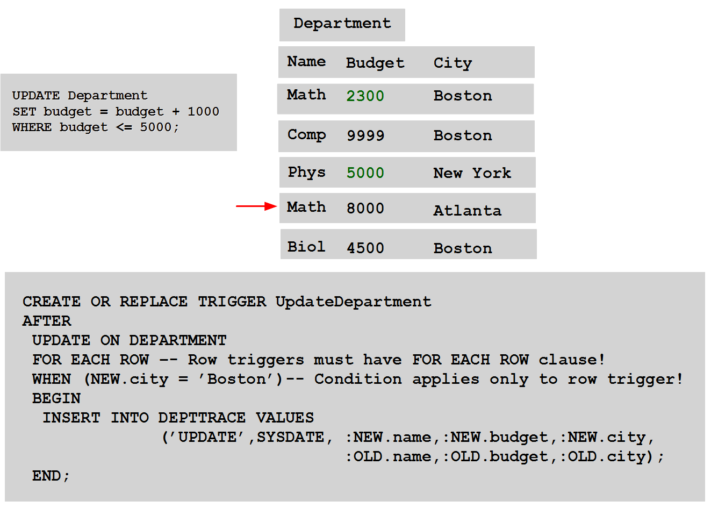
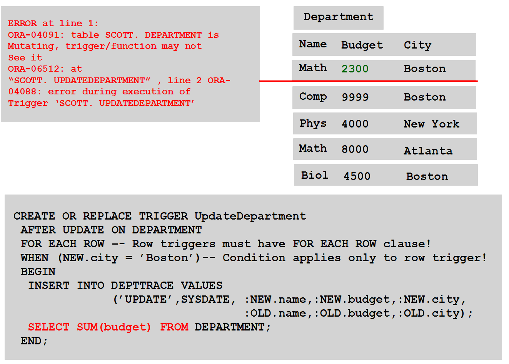

ON UPDATE OF EMPLOYEE.salary
IF :NEW.salary > 100000 THEN
IncreaseJobLevel(:NEW.enumber, :NEW.salary);
END IF;
ON UPDATE OF EMPLOYEE.salary
IF TO_CHAR(SYSDATE,'Day') IN ('Saturday', 'Sunday') THEN
RAISE_APPLICATION_ERROR(-20001, 'Salary cannot be updated over a weekend !');
END IF;
ON INSERT INTO EMPLOYEE
SELECT COUNT(*)
INTO total_employees
FROM EMPLOYEE
WHERE dname = :NEW.dname;
IF total_employees = 100 THEN
RAISE_APPLICATION_ERROR(-20002, 'Too many employees in ' || :NEW.dname);
END IF;
ON UPDATE OF EMPLOYEE.salary
IF :NEW.salary > 100000
IncreaseJobLevel(:NEW.enumber, :NEW.salary);
CREATE OR REPLACE TRIGGER CheckBudget
BEFORE
UPDATE OF budget ON DEPARTMENT
FOR EACH ROW -- FOR EACH ROW means that it is a row trigger
WHEN NEW.name = 'Math' -- NEW is a so called pseudorecord
BEGIN
IF NOT ( :NEW.budget BETWEEN 1 AND 7000 ) THEN
RAISE_APPLICATION_ERROR(-200001, 'Budget of department ' || :NEW.name ||
' cannot be equal to ' || :NEW.budget );
END IF; END;
CREATE OR REPLACE TRIGGER CheckBudget
BEFORE UPDATE OF budget ON DEPARTMENT
FOR EACH ROW
WHEN NEW.name = 'Math'
BEGIN
IF NOT ( :NEW.budget BETWEEN 1 AND 7000 ) THEN
RAISE_APPLICATION_ERROR(-200001, 'Budget of department ' || :NEW.name ||
' cannot be equal to ' || :NEW.budget );
END IF;
END;
BEFORE UPDATE OF budget ON DEPARTMENT
AFTER DELETE OR UPDATE ON DEPARTMENT
INSTEAD OF INSERT ON EMPVIEW
BEFORE UPDATE OF attribute, attribute,... ON table
AFTER INSERT ON table
BEFORE DELETE ON table
AFTER DELETE OR INSERT OR UPDATE ON table
AFTER ALTER database object
BEFORE CREATE database object
AFTER DROP database object
AFTER GRANT database object
BEFORE ANALYZE database object
AFTER GRANT system privilege
AFTER SERVERERROR ON SCHEMA
BEFORE LOGON
BEFORE LOGOFF
AFTER STARTUP
BEFORE SHUTDOWN
WHEN (condition)
WHEN (OLD.status = 'BUSY' AND NEW.status = 'AVAILABLE');
WHEN (NEW.amount > 1000 );
WHEN (OLD.credits IN (6, 12));
CREATE OR REPLACE TRIGGER ModifyDepartment
AFTER DELETE OR UPDATE ON DEPARTMENT
BEGIN -- Statement triggers have no FOR EACH ROW clause!
IF DELETING THEN
INSERT INTO DEPTAUDIT VALUES('DELETE', SYSDATE);
ELSIF UPDATING THEN
INSERT INTO DEPTAUDIT VALUES('UPDATE', SYSDATE);
END IF;
END;
UPDATE DEPARTMENT SET budget = budget + 1000 WHERE budget < 5000;
3 row updated
BEGIN
IF DELETING THEN
INSERT INTO DEPTAUDIT VALUES('DELETE', SYSDATE);
ELSIF UPDATING THEN
INSERT INTO DEPTAUDIT VALUES('UPDATE', SYSDATE);
END IF;
END;
BEFORE INSERT ON DEPARTMENT
AFTER UPDATE ON EMPLOYEE
AFTER DELETE ON PROJECT
CREATE OR REPLACE TRIGGER UpdateDepartment
AFTER UPDATE ON DEPARTMENT
FOR EACH ROW -- Row trigger must have FOR EACH ROW clause !
WHEN (NEW.city = 'Boston')-- Only for row triggers!
BEGIN
INSERT INTO DEPTTRACE VALUES
('UPDATE', SYSDATE, :NEW.name, :NEW.budget, :NEW.city,
:OLD.name, :OLD.budget, :OLD.city );
END;

